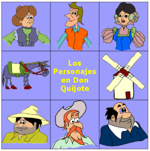

En este capitulo se nos presenta a Alonso Quijana como un hombre no excesivamente rico, incluso se podría decir que era mas bien pobre. También no describe la edad de este peculiar personaje "50 años" y de su peculiar ama de llaves que pasaba de los 40. Este buen hombre tenía era de complexión recia, madrugador y gran aficionado a la caza. Este peculiar personaje era gran amante de las novelas de caballería y tenía como escritor favorito a Feliciano de Silva. Tal fue la obsesión por estos libros de caballería que decidió convertirse en caballero. Para llevar a cabo esta extraña aventura tubo que coger y limpiar las armas de sus bisabuelos, las cuales tubo que preparar para su uso. Para poder convertirse en un buen caballero necesitaba las siguientes cosas: Un nombre para él mismo: pues todo caballero que se precie tenia un nombre apropiado para tal faena. Decidió ponerse como nombre Don Quijote de la Mancha, idea que sacó de Amadís de Gaula. Un nombre para su caballo: Al cual puso como nombre Rocinante, ya que el pobre caballo no se encontraba en su mejor momento. Una mujer a la cual dedicarle todos sus triunfos y glorias, ya que en aquellos tiempos un caballero no podía comportarse como tal si no tenía una mujer a la que dedicarle sus triunfos.
En este capitulo se nos narra como Don Quijote a medida emprende su primera salida antes del amanecer. Por el camino se iba haciendo preguntas sobre él mismo y sobre su futuro como caballero y llego a la conclusión de que en realidad no era un caballero pues no llevaba armas blancas como cualquier los caballeros de sus novelas, pero después de mucho pensar pudo mas su locura que su cordura pues siguió pensando que era un perfecto caballero. A medida que cabalgaba iba imaginándose que sería un caballero famoso y que aparecería en los libros de caballería por sus grandes hazañas. Comenzó a anochecer y Don Quijote se introdujo en una venta para pasar la noche. Allí encontró a dos mujeres a las cuales comenzó a elogiar y alabar, las dos mujeres comenzaron a reírse de su forma de hablar y de que no se daban por aludidas de tales piropos. Don Quijote comenzaba a enojarse, pero en ese momento apareció el ventero que le ofreció comida, un lugar para dejar el caballo y un buen lugar para dormir.
En este capitulo Don Quijote se arma caballero. Para que este nombramiento fuese valido Don Quijote le pidió al ventero que le nombrara caballero, dándole sus razones de porque este nombramiento. El ventero acepto a este extraño nombramiento pensando que Don Quijote estaba loco y que él a su vez ganaría un buen dinero. Para que este nombramiento fuese valido las armas del caballero deberían poner las armas a velar en la capilla, pero como allí no había capilla, ya que supuestamente se estaba construyendo, pusieron a velar las armas en el patio y de esta manera Don Quijote permanecería vigilándolas durante todo el día para que no se las robaran. Don Quijote se tubo que enfrentar con dos hombres que pretendían robárselas hasta que apareció el ventero y puso paz. Al final Don Quijote fue nombrado caballero a la vieja usanza, dando dos toques con la espada en los hombros del caballero. Una vez acabado el nombramiento las dos mujeres se quedaron sorprendidas y le dijeron a Don Quijote que le servirían de por vida, entonces Don Quijote pregunto sus nombres y dijo que desde entonces se llamarían por Doñas. Al final todo quedo en nada y Don Quijote se marcho al amanecer.
En este capitulo Don Quijote se va de la venta y vuelve al pueblo a recoger dinero y a buscarse un escudero. Por el camino oye unas voces y se dirige hacia ellas. Una vez allí ve como un señor está azotando a un niño, en ese momento Don Quijote ordena al señor que pare a menos que se quiera enfrentar con él, entonces el señor se detiene. Entonces Don Quijote le pregunta al señor que porque estaba pegando al pobre niño, el señor responde que el niño le había perdido una ovejas y el niño alega que él lleva 9 meses sin pagarle. Don Quijote hace jurar al señor que pagaría al niño y que le dejaría libre. Posteriormente Don Quijote se va y prosigue su camino. Al irse Don Quijote el señor vuelve a azotar al niño y este le dice que va a buscar a Don Quijote. Don Quijote prosigue su camino y se encuentra a dos mercaderes a los cuales les cuenta la belleza de su amada dulcinea. Estos mercaderes, para satisfacerse, le asienten diciendo que si pero que será manca y tuerta. Don Quijote enojado les ataca pero con la mala suerte de que su caballo tropieza y no se consigue levantar con el enorme peso de las armas. Los mercaderes le atacan y le rompen la lanza. Mas tarde ambos mercaderes se van y abandonan a Don Quijote.
Don Quijote desgraciado empezó a recordar uno de los libros que había leído y empezó a recitarlo en alto. Por suerte para Don Quijote paso por allí que le reconoció como Quijana y le ayudo a levantarse cargando las armas de Don Quijote sobre su caballo Rocinante. El hombre le preguntaba a Don Quijote constantemente como estaba pero Don Quijote le respondía constantemente con versos de los tantisimos libros que había leído. Por el camino Don Quijote iba desvariando constantemente y citando libros que había leído. A una hora en la que nadie pudiera ver al hombre entrar en la casa de Don Quijote con el propio Don Quijote mal herido entraron ambos en el pueblo. Allí se encontraban su mujer, la sobrina, el cura, y el barbero. Cuando habían curado a Don Quijote este explico que le habían herido 10 gigante. Cuando Don Quijote se fue a la cama el hombre explico todo lo que Don Quijote había estado diciendo durante el viaje.
El cura y el barbero le pidieron al ama de Don Quijote las llaves de la biblioteca de Don Quijote para quemar todos los libros de Don Quijote. Así el cura y el barbero decidieron quemar todos los libros de Don Quijote y en especial los de caballería, y entonces cogieron todos los libros de Don Quijote y en especial los libros de caballería, para llevar a cabo su plan decidieron quemarlos en el corral para que nadie se pudiese ofender o molestar. El cura y el barbero decidieron quemar casi todos los libros a excepción de alguno como pudo ser el Amadís de Gaula. Cuando ya habían quemado todos los libros grandes se dispusieron a quemar todos los libros de pequeño tamaño que trataban de pastores y de amoríos. Quemaron todos los libros a excepción de uno o dos que conservaron para leerlos ellos posteriormente.
Don Quijote se despertó dando voces, ya que estaba desvariando y se creía que estaba luchando con muchos enemigos. Acto seguido comenzó a hablar de libros de caballería, el cura y el ama de llaves de Don Quijote le dieron de comer y le volvieron a acostar para que se relajara y descansara. El cura, el barbero y la ama de Don Quijote decidieron poner un muro en la biblioteca de Don Quijote para que este no pudiera acceder a la biblioteca y así no se diese cuenta de que todos sus libros habían desaparecido. En el caso de que Don Quijote se acordase de su biblioteca y preguntara por sus libros, sus amigos le dirían que había sido un mago que la hizo desaparecer mientras Don Quijote dormía. Y así fue, cuando Don Quijote se despertó y preguntó por su habitación llena de libros de caballería sus amigos le dijeron que había sido un mago que la había hecho desaparecer. Don Quijote pasó 15 días tranquilos ya que se había propuesto buscar un escudero y conseguir dinero. Para obtener este dinero fue necesario que empeñara ciertas pertenencias suyas. Durante este tiempo encontró a un pobre hombre llamado Sancho Panza al cual le ofreció varias islas si se iba con él de aventuras. Después de haber hecho este peculiar trato ambos aventureros se marcharon al anochecer. Durante el viaje Don Quijote y Sancho estuvieron hablando sobre la isla que le había prometido Don Quijote a Sancho.
Por el camino Don Quijote y Sancho se encuentran con unos molinos de viento y Don Quijote creyéndose que son gigantes se dispone a atacarlos con su lanza. Sancho le dice que no son mas que molinos, pero Al día siguiente cuando se disponían a ir a Puerto Lápice en busca de aventuras vieron a dos monjes, vestidos con sus hábitos negros y a una mujer que iba detrás de ellos, se supone que iban todos en la misma dirección. Don Quijote se penso que estos hombres tenían secuestrada a la señora que iba detrás de ellos, y decidió atacar a los pobres monjes. Sancho le aviso que no eran mas que dos frailes pero Don Quijote no le hizo caso y ataco a los frailes. Los dos frailes salieron corriendo con la mala fortuna de que uno de ellos se calló al suelo, Sancho amablemente intento ayudar al fraile que se había caído pero dos mozos arremeten contra él y le dejan inconsciente. Don Quijote a su vez fue a presentarle sus respetos a la señora, pero el escudero de ella arremetió contra Don Quijote dejándole herido de un hombro.
En este capítulo Cervantes nos cuenta como continuo la historia entre la lucha de Don Quijote y el vizcaino, ya que tenía pensado acabar el libro aquí. Así pues estaban peleando ambos caballeros con las espadas levantadas y con rostros impasibles, el vizcaino ataca hierendole en una oreja y rompiéndole la armadura a la altura del hombro. Don Quijote enfurecido ataca tirándole del caballo e hiriendole la cara al vizcaino. Don Quijote se baja del caballo para rematarle a menos que fuera a dar sus honores a su amada Dulcinea del Toboso. El vizcaino acepta y Don Quijote le deja marchar para que valle a presentar sus respetos a la amada del buen Don Quijote.
En este capitulo tras la batalla con el vizcaino Don Quijote y Sancho deciden reanudar su camino. Sancho pensando que Don Quijote había ganado algo después de esa batalla le pregunta por la isla que le había prometido y Don Quijote dijo que el pobre vizcaino no era un hombre del que se pudiera obtener dinero.
Por el camino Sancho decide curarle la oreja a Don Quijote, y este habla de un bálsamo que te recupera instantáneamente.
Mientras tanto estaban pensando donde podían dormir esa noche, ya que en una iglesia no podían dormir ya que habían agredido a unos monjes. Por el camino decidieron cenar y Sancho sacó cebolla, pan y queso. Al no encontrar un lugar donde dormir, decidieron dormir cerca de una chochas de pastores al aire libre.

VOLVER